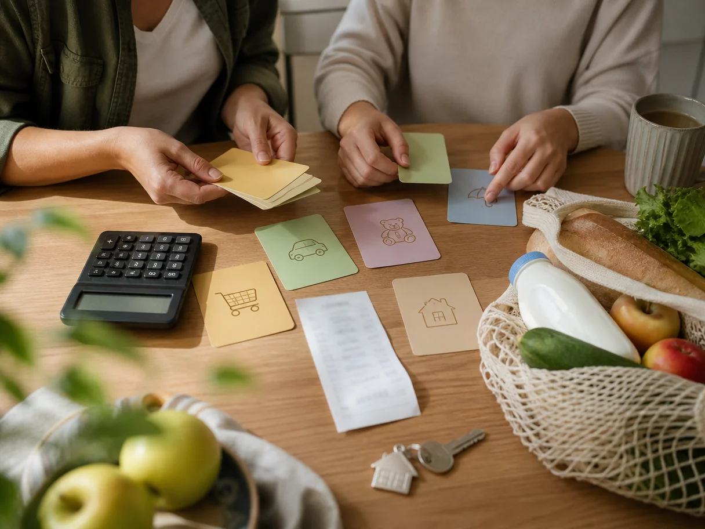
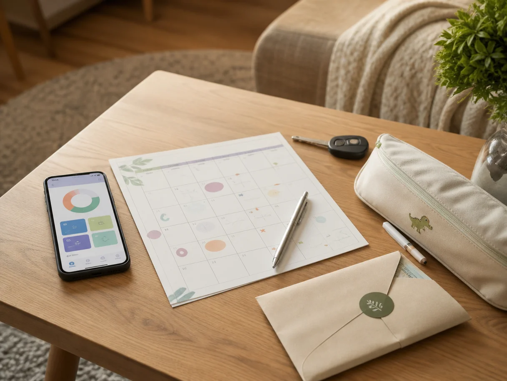

Вести семейный бюджет вдвоём обычно начинают не от любви к таблицам. Скорее после знакомой ситуации: зарплата пришла, через несколько дней оплачены аренда или ипотека, сад, кредит, продукты, бензин — и вдруг непонятно, сколько денег осталось. Один уверен, что можно заказать доставку и купить кроссовки ребёнку, другой тревожится из-за приближающегося платежа за машину. Формально никто не сделал ничего плохого, но разговор легко превращается в взаимные претензии.
Проблема часто не в том, что семья «не умеет обращаться с деньгами» или слишком много тратит. Просто у пары нет общей картины будущих денег. Каждый видит свой счёт, свои ближайшие планы и помнит разные обязательства. Семейный бюджет помогает собрать это в одном месте и заранее решить, на что пойдут деньги.
При этом бюджет вдвоём не должен означать отчёт за каждую чашку кофе. Хорошая система даёт больше спокойствия и свободы: вы знаете, что обязательное уже учтено, цели не забыты, а доступную на обычную жизнь сумму не нужно каждый раз угадывать.
Сначала договоритесь, зачем вам общий бюджет
Фраза «надо вести бюджет» звучит разумно, но для разных людей она означает совершенно разное. Один хочет перестать уходить в минус к концу месяца. Другой — накопить на отпуск. Третий — понять, можно ли поменять машину без ощущения, что семья останется без запаса.
Полезнее начать не с категорий и не с приложения, а с одного конкретного результата на ближайшие месяцы. Например: спокойно платить все обязательные расходы, отложить на лечение зубов, собрать резерв на непредвиденные случаи или перестать обсуждать каждую крупную покупку в последний момент.
Это меняет сам разговор. Вместо «ты опять много потратил на маркетплейсе» появляется вопрос: «Как нам оставить деньги на то, что мы решили сделать важным?» Не всегда ответ будет удобным, но он будет про общую задачу, а не про поиск виноватого.
Выберите формат, который не придётся героически поддерживать
У пар нет единственно правильной модели денег. Важно, чтобы правила были понятны обоим и не создавали ощущения несправедливости. Обычно используют один из трёх вариантов.
Полностью общий бюджет
Все доходы складываются в общую сумму, из неё оплачиваются и обязательные платежи, и повседневные траты, и цели. Такой вариант удобен, когда партнёры воспринимают деньги как общий ресурс и не хотят считать, кто именно заплатил за продукты или коммуналку.
Но даже в полностью общем бюджете стоит заранее выделить личные деньги каждому. Это не недоверие, а пространство без объяснений: подарок партнёру, встреча с друзьями, хобби, одежда, небольшая спонтанная покупка. Размер может быть одинаковым или зависеть от договорённости, главное — чтобы правило не менялось задним числом.
Общие расходы и личные деньги
Здесь у пары есть общий счёт или отдельная общая копилка для аренды, продуктов, ребёнка, машины, отпуска и накоплений. Остаток каждый оставляет себе. Модель особенно понятна, если у партнёров уже были раздельные финансы или доходы заметно отличаются.
Взносы в общий бюджет можно делить поровну, но не обязательно. Если один зарабатывает больше, доля от дохода иногда ощущается честнее, чем одинаковая сумма. Универсальной формулы нет: договорённость должна выдерживать обычный месяц, а не выглядеть красиво только на бумаге.
Разделение зон ответственности
Один оплачивает жильё и коммунальные услуги, другой — продукты, ребёнка и транспорт. Этот способ кажется простым, пока не появляются нерегулярные траты: страховка, врач, подарки родственникам, сборы в школу, ремонт техники. Поэтому при таком формате особенно важно отдельно планировать общие цели и редкие платежи, а не надеяться, что они «как-нибудь решатся».
Формат можно менять. Например, после рождения ребёнка, смены работы или переезда прежняя схема часто перестаёт быть удобной. Это не провал, а нормальный повод обсудить правила заново.

Не путайте учёт расходов с планированием денег
Учёт расходов отвечает на вопрос: куда ушли деньги. Это полезно. Он может показать, что доставка еды стала привычнее, чем казалось, или что на маркетплейсах незаметно набирается заметная сумма.
Но учёт смотрит назад. Если вы в конце месяца узнали, что много потратили на продукты, это не помогает сегодня решить, можно ли купить билеты в отпуск или оплатить курсы ребёнку.
Планирование отвечает на другой вопрос: что должно произойти с деньгами, которые уже есть и ещё поступят. Сначала вы резервируете ближайшие обязательства, затем обычные траты, накопления и известные крупные покупки. После этого становится видно не просто число на карте, а сумма, которой действительно можно распоряжаться.
Именно это называют управлением денежным потоком: вы смотрите, когда приходят деньги и когда они понадобятся. Для семьи это часто важнее идеальной статистики. Зарплата может быть нормальной, но если ипотека списывается в начале месяца, страховка — в середине, а доход партнёра приходит позже, на карте легко увидеть обманчивый остаток.
Соберите бюджет не по сотне категорий, а по реальной жизни
На старте не нужно создавать подробную систему, которую никто не откроет через две недели. Достаточно нескольких понятных блоков.
- Обязательное: жильё, коммунальные услуги, кредиты, связь, сад или школа, лекарства, регулярные подписки.
- Повседневная жизнь: продукты, транспорт, бытовые покупки, кафе и доставка, одежда.
- Нерегулярное, но ожидаемое: дни рождения, обслуживание машины, сезонная одежда, отпуск, визиты к врачу, ремонт.
- Накопления и запас: деньги, которые не хочется случайно потратить до нужного момента.
- Личное: суммы каждого партнёра без общего согласования.
Самый недооценённый блок — нерегулярные расходы. Они выглядят как неожиданности, хотя многие из них повторяются каждый год. Зимняя обувь ребёнку, подарок маме, полис для машины или подготовка к отпуску не возникают из воздуха. Если понемногу закладывать на них заранее, они перестают ломать месяц.
Не обязательно точно угадать каждую сумму. На первом этапе важнее заметить саму статью расходов и начать оставлять для неё место. Через пару месяцев план станет ближе к вашей реальной жизни.
Как провести первый разговор о деньгах без напряжения
Лучше не начинать его вечером после спорной покупки или в день, когда нужно срочно оплатить счёт. Выберите спокойный момент и ограничьте встречу по времени: например, полчаса. Цель первого разговора — не разобрать всю финансовую историю семьи, а договориться о ближайшем месяце.
Можно идти по такому порядку:
- Назвать все доходы и даты, когда они приходят.
- Выписать платежи, которые нельзя пропустить до следующего дохода.
- Вспомнить известные нерегулярные траты ближайших месяцев.
- Определить сумму на обычную жизнь после резервов.
- Договориться о личных деньгах и о том, какие покупки обсуждаются вместе.
Последний пункт часто снимает много напряжения. Например, пара может решить, что покупки для дома выше определённой комфортной суммы обсуждаются заранее, а личные траты — нет. Не потому что кому-то нужно разрешение, а потому что общий план не должен меняться неожиданно для второго человека.
Бюджет работает не тогда, когда в нём всё идеально, а когда оба знают правила и могут честно сказать: «Этот месяц получился другим, нужно перестроить план».
Оставьте место для ошибок и обычной жизни
Слишком строгий бюджет часто заканчивается одинаково: несколько недель всё идёт идеально, потом появляется усталость, внезапная доставка, незапланированный врач или поездка к родственникам — и систему хочется бросить. Не потому что люди безответственны, а потому что план был рассчитан на вымышленную жизнь без сюрпризов.
Полезно предусмотреть небольшую гибкую сумму на месяц. Она не обязана иметь идеальное название. Это деньги на то, что заранее не удалось предсказать: срочно заменить кроссовки, заказать такси в дождь, купить подарок на детский праздник. Такой запас не отменяет планирование, а делает его жизнеспособным.

Проверяйте бюджет коротко, но регулярно
Не нужно устраивать финансовое совещание каждый вечер. Для большинства семей достаточно короткой сверки раз в неделю и более обстоятельного разговора перед новым месяцем или после поступления основного дохода.
На недельной сверке достаточно трёх вопросов: какие обязательные платежи впереди, хватает ли запланированного на повседневные траты, появились ли новые расходы. Это занимает меньше времени, чем один эмоциональный разговор о деньгах, когда уже поздно что-то менять.
Если вести бюджет в сервисе, где видно будущие поступления, резервы и плановые расходы, обсуждать проще: вы смотрите не на ощущения, а на общую картину. В «Семейном потоке» можно заранее распределять деньги по задачам семьи и видеть, какая сумма остаётся доступной до следующего дохода.
Что делать, если один партнёр вовлечён сильнее
Так бывает почти в любой паре. Один любит планировать и помнит даты платежей, второй не хочет разбираться в категориях и таблицах. Попытка назначить первого финансовым контролёром обычно ухудшает ситуацию: ему достаётся тревога и нагрузка, а второму — чувство, что им управляют.
Лучше разделить не только деньги, но и участие. Один может вносить платежи и обновлять план, второй — раз в неделю смотреть общую картину и подтверждать решения по крупным тратам. Или один следит за регулярными счетами, а второй — за целями и нерегулярными покупками. Важно, чтобы оба имели доступ к информации и понимали, что происходит.
Семейный бюджет вдвоём не решает все разногласия автоматически. Зато он убирает часть поводов для них: неизвестность, разные ожидания и разговоры уже после того, как деньги потрачены. Начните с простой схемы на один месяц. Не стремитесь к идеальному контролю. Стремитесь к ясности, в которой у каждого есть и общая опора, и личная свобода.